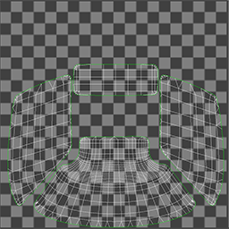
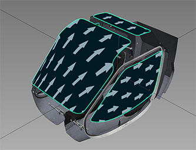

FlightSim Material
- Using the FlightSim Material
- Material Types
- Parameters
- Unique In Container Inheritance
- Base Color
- Emissive
- Roughness
- Metallic
- Normal Scale
- Alpha Mode
- Alpha Cutoff
- Detail UV Scale
- Detail UV Offset U
- Detail UV Offset V
- Detail Normal Scale
- Blend Threshold
- Decal per component blend factors
- Glass parameters
- Parallax parameters
- Render parameters
- Gameplay parameters
- UV options
- Textures
This document deals with the 3dsMax aspects of the Microsoft Flight Simulator material. Refer to the material and lighting model sections for information about the material parameters.
Using the FlightSim Material
The Microsoft Flight Simulator Material will be available after installing the 3D Studio Max plugin. It can be found in the material browser under Materials/Standard.


Material Types
Microsoft Flight Simulator materials can be one of several material types. These include things like geometry decals and ice. They each have varying support for different blend modes and textures. If parameters are not supported for the current type, they will be grayed out.
Standard
The default material type.
Meshes with this type will be rendered in the deferred rendering pass (Alpha Mode = OPAQUE) or in the transparent pass (Alpha Mode = MASK or BLEND).
Decal
The Decal material type is for geometry decals, which are shapes rendered on top of another mesh.
If several decals are to be rendered on top of eachother, they have to be in the same submesh, or it will cause rendering artifacts. The order of the sub-materials will determine the order in which they are rendered (first sub-material is rendered first).
Meshes with this type will be rendered in a special pass between the deferred and the transparent pass.
Windshield
The Windshield material type is used to identify the windshields of the aircraft. It is used mainly for rain effects, otherwise similar to the Standard material type.
Meshes with this type will be rendered in a special pass between the deferred and the transparent pass.
Porthole
This material type wil be used for fake views through portholes using parallax scrolling.
Glass
This material type wil be used for generic glass surfaces.
GeoDecalFrosted
The GeoDecalFrosted material type is for geometry decals used to add the frost effect, which are shapes rendered on top of another mesh.
If several decals are to be rendered on top of eachother, they have to be in the same submesh, or it will cause rendering artifacts. The order of the sub-materials will determine the order in which they are rendered (first sub-material is rendered first).
Meshes with this type will be rendered in a special pass between the deferred and the transparent pass.
ClearCoat
This material type wil be used to simulate vehicle paint.
ParallaxWindow
This material type wil be used to fake building interiors through parallax effects and a special texture mapping.
Anisotropic
This material aims to model the light behavior seen in striped micro-surfaces. Such cases may be brushed metal or many types of fabrics.
Hair
This material type wil be used to simulate characters hairs.
SSS
This material type wil be used to simulate skin.
Invisible
This material will be used for non visible objects.
FakeTerrain
The terrain material type.
Meshes with this type will have the same shading system of the terrain in Microsoft Flight Simulator
FresnelFade
This material will be used to make an object visible based on the camera angle.
EnvironmentOccluder
This material will be used to hide environmental meshes that eventaully compenetrate with a mesh with this material assigned.
Parameters
Unique In Container Inheritance
When checked, makes sure the name of the material remains unique when importing materials from a container, by adding a suffix in the form of [MaterialName]_[ContainerID], where [MaterialName] and [ContainerID] are replaced by the material name and the container ID respectively.
Base Color
The base color of the material. The alpha mode property specifies how the alpha is interpreted. These values are linear. If a base color texture is specified, this value is multiplied with the texel values.
Emissive
The emissive color of the material. These values are linear. If an emissive texture is specified, this value is multiplied with the texel values.
Roughness
The roughness of the material. A value of 1.0 means the material is completely rough. A value of 0.0 means the material is completely smooth. This value is linear. If an “Occlusion (R) Roughness(G) Metallic(B)” texture is specified, this value is multiplied with the roughness texel values.
Metallic
The metalness of the material. A value of 1.0 means the material is a metal. A value of 0.0 means the material is a dielectric. Values in between are for blending between metals and dielectrics such as dirty metallic surfaces. This value is linear. If an “Occlusion (R) Roughness(G) Metallic(B)” texture is specified, this value is multiplied with the metallic texel values.
Normal Scale
The scalar multiplier applied to each normal vector of the texture. This value is ignored if the “Normal” texture is not specified.
Alpha Mode
OPAQUE
The material is fully opaque and any alpha values are ignored.
MASK
The material is either fully opaque or fully transparent depending on the alpha value and the specified alpha cutoff value. This mode can be used to simulate geometry such as tree leaves or wire fences. Pixels with an alpha above the alpha cutoff parameter value are discarded, the others are opaque.
BLEND
The output is blended with the background using a traditional blend operation (i.e. the Porter and Duff over operator). This mode can be used to simulate geometry such as gauze cloth or animal fur.
DITHER
The output is blended with the background using a dithering pattern.
Alpha Cutoff
When alphaMode is set to MASK, the Alpha Cutoff property specifies the cutoff threshold. If the alpha value is greater than or equal to the Alpha Cutoff value then it is rendered as fully opaque, otherwise, it is rendered as fully transparent. The Alpha Cutoff value is ignored for other modes.
Detail UV Scale
UV scale factor for the detail map.
Detail UV Offset U
Offset for the detail map along the horizontal axis.
Detail UV Offset V
Offset for the detail map along the vertical axis.
Detail Normal Scale
The Normal scale factor for the detail normal map.
Blend Threshold
Defines the sharpness of the blending. The Lower the value, the sharper the blending.
Decal per component blend factors
Color
This value determine how the decal material is blended with the background. A value of 0 means the background material’s color component is used. A value of 1 means the decal material’s color component is used. A value between 0 and 1 will blend the two values. The components are linearly interpolated.
Roughness
This value determine how the decal material is blended with the background. A value of 0 means the background material’s roughness component is used. A value of 1 means the decal material’s roughness component is used. A value between 0 and 1 will blend the two values. The components are linearly interpolated.
Metal
This value determine how the decal material is blended with the background. A value of 0 means the background material’s metal component is used. A value of 1 means the decal material’s metal component is used. A value between 0 and 1 will blend the two values. The components are linearly interpolated.
Occlusion
This value determine how the decal material is blended with the background. A value of 0 means the background material’s occlusion component is used. A value of 1 means the decal material’s occlusion component multiplied with the background one is used. A value between 0 and 1 will blend the two values. The components are linearly interpolated.
Normal
This value determine how the decal material is blended with the background. A value of 0 means the background material’s normal component is used. A value of 1 means the decal material’s normal component is used. A value between 0 and 1 will blend the two values. The components are linearly interpolated.
Emissive
This value determine how the decal material is blended with the background. A value of 0 means the background material’s emissive is used. A value of 1 means the decal material’s emissive is used. A value between 0 and 1 will blend the two values. The components are linearly interpolated.
Glass parameters
Glass Reflection Mask Factor
This value defines the strength of reflections. The environment used for reflections is determined by Microsoft Flight Simulator and is not configurable. A value of 0 means no reflection, a value of 1 means maximum reflection.
Glass Deformation Factor
This value defines the strength of refraction. The environment used for refraction is determined by Microsoft Flight Simulator and is not configurable. A value of 0 means no refraction, a value of 1 means maximum refraction.
Parallax parameters
A parallax effect can be used to render fake interiors through a building window. It uses the second UV set (UV2) to tile the fake rooms.
Parallax scale
A scalar multiplier applied to increase the depth of the fake rooms.
Room SizeX Scale
A scalar multiplier applied to increase the horizontal size of the fake room, it is a multiplier for the UV2 used for the fake rooms.
Room SizeY Scale
A scalar multiplier applied to increase the vertical size of the fake room, it is a multiplier for the UV2 used for the fake rooms.
Room number XY
The number of rooms available on the texture.
Corridor
Use this to not render the left and right walls of the fake interiors. This will connect rooms together on the horizontal axis and, when observed from an angle, make them look like corridors.
Fresnel parameters
These parameters are used by the FresnelFade material type.
Fresnel Factor
Exponent factor for the opacity of the fresnel effect.
Fresnel Opacity Bias
This value is subtracted from the previous fresnel opacity result. It’s there to enforce the transparency effect when the previous dot product is close to zero.
Render parameters
Draw Order
Material types: decal, windshield, glass.
This value modifies the sorting order. The value can range from from -999 to 999. This can be used to avoid rendering artifacts such as flickering when multiple transparent or decal material types are on top of eachother in the rendered output.
no Cast Shadow
When checked, objects with this material will not cast shadows.
Double Sided
When checked, back-face culling is disabled and double-sided lighting is enabled. Be aware that the normal of the back-side face is not flipped. If correct lighting is required, use double-sided geometry instead.
DayNightCycle
When checked, the emissive will be linked to the day/night cycle.
Gameplay parameters
Collision Material
Collision Material
When checked, meshes with this material will have collidable faces. This can be used to create precise colliders, for example for mouse interaction. Use this with low-resolution meshes.
Road Material
Road Material
When checked, meshes with this material are considered to be a road. This can be used to define which part of an asset can be used by cars, for example. Use this with low-resolution meshes.
UV options
ClampU
Clamps UVs on the U axis.
ClampV
Clamps UVs on the V axis.
Textures
Unless specified otherwise:
- Texture formats should be
.PNGor.JPG, but other formats may be supported. - Texture slots will use the same UV set (UV1).
- Only the name of the texture is exported, the relative path is ignored. Microsoft Flight Simulator models rely on texture fallback directories to find them instead of looking relative to the
.glTF.
Standard, Decal, PortHole, Glass, FakeTerrain
Base Color texture
The base color texture. The first three components (RGB) are encoded with the sRGB transfer function. They specify the base color of the material. If the fourth component (A) is present, it represents the linear alpha coverage of the material. Otherwise, an alpha of 1.0 is assumed.
Occlusion(R) Roughness(G) Metallic(B)
The occlusion-metallic-roughness texture. The metalness values are sampled from the B channel. The roughness values are sampled from the G channel. The occlusion values are sampled from the R channel. These values are linear. If an alpha channel is present (A), it is ignored for occlusion-metallic-roughness calculations.
Normal
A tangent space normal map.
Emissive
The emissive map controls the color and intensity of the light being emitted by the material.
Detail Color(RGB) Alpha(A)
When no blend mask is specified, the detail basecolor is interpreted as a linear texture ranging between 0 and 1 of which the channels are blended with the primary basecolor in a linear fashion. In this case, the detail basecolor textures are interpreted such that a value of 0.5 will produce no changes, values below 0.5 will darken the primary basecolor and values above will lighten it. Painting the vertex alpha channel allows to define how the map impacts the base color.
Detail Occlusion(R) Roughness(G) Metallic(B)
When no blend mask is specified, the detail occlusion-roughness-metallic texture is treated as a linear texture with values ranging between 0 and 1. The values will be added to the primary Occlusion(R), Roughness(G), Metallic(B) in a linear fashion: a value of 0.5 will produce no changes, values below 0.5 will decrease the primary values and values above 0.5 will increase them. Painting the vertex alpha channel allows to define how the map impacts the occlusion-roughness-metallic texture.
Detail Normal
When no blend mask is specified, the detail normals are added to the primary normal channels. Painting the vertex alpha channel allows to define how the map impacts the normals.
BlendMask
When this texture is set, the Detail map slots became a secondary sets of texture The BlendMask is a textures maps used to blend between Base and Secondary slots of textures
GeoDecalFrosted
Basecolor
Occlusion (R) Roughness(G) Metallic(B)
Normal
Emissive
Detail Color(RGB) Alpha(A)
Melt pattern(R) Roughness(G) Metallic(B)
Melt pattern (R) not used.
The Roughness(G) and Metallic(B) channels are blended with the primary Roughness(G) and Metallic(B) channels in the same way as the detail occlusion-roughness-metallic texture.
Detail Normal
ClearCoat
Basecolor
Occlusion (R) Roughness(G) Metallic(B)
Normal
Emissive
Detail Color (RGB) Alpha(A)
Detail Occlusion (R),Roughness(G) Metallic(B)
Detail Normal
BlendMask
Clearcoat amount (R), Clearcoat rough (G)
The ClearCoat material type creates a lacquered effect, like a layer of varnish on top of another material. Red Channel controls the amount of varnish, green channel controls the roughness of varnish.
Windshield
Basecolor
Occlusion (R) Roughness(G) Metallic(B)
Normal
Secondary Details(A)
A texture used to add a layer of details on top of the windshield using the Alpha channel. The uv used for this detail map are not affected by Detail UV Scale, Detail UV Offest U,Detail UV Offest V
Details Scratch(R), Icing Mask(G), Fingerprints(B)
A texture used to add a layer of details on top of the windshield.
Icing Normal
This texture is used as the normal map for the ice, when it is present. The uv set used to sample this texture is affected by the same parameters used for the detail map.
BlendMask
WiperMask (RG)
Reserved for future use.
The windshield material also uses vertex color data:
Vertex Alpha:
This color defines the strength of the icing effect applied through the green channel of Details Scratch(R), Icing Mask(G), Fingerprints(B). A value of 0 means no icing, a value of 1 means maximum icing.
Vertex Color R:
This color defines the strength of the scratches applied through the red channel of Details Scratch(R), Icing Mask(G), Fingerprints(B). A value of 0 means no scratch, a value of 1 means maximum scratch.
Vertex Color B:
This color defines the strength of the fingerprints applied through the blue channel of Details Scratch(R), Icing Mask(G), Fingerprints(B). A value of 0 means no fingerprints, a value of 1 means maximum fingerprints.
Vertex Color G:
This color defines the strength of the opacity applied through the alpha channel of Secondary Details(A). A value of 0 means no secondary setail, a value of 1 means maximum secondary Detail.
Note: A secondary UV set is used to sample rain effect textures. Those textures will be applied to the windshield material by Microsoft Flight Simulator at runtime. The following images show an example of the secondary UV set. Make sure the projection follows the shown directions.
 
ParallaxWindow
Front Glass Color
Occlusion (R) Roughness(G) Metallic(B)
Front Glass Normal
Behind Glass Color (RGB), Alpha (A) & Emissive Ins Window (RGB), offset Time (A)
those texture must be subdivided in a grid matching the number of column/row specified in the “room number xy” parameters each cell contains an image of a room with a size relative to the cell’s UV that respect following rules
Vertically
- floor 1/4
- roof 1/2
- walls 1/4
Horizontal
- left wall 1/4
- back wall 1/2
- right wall 1/4
“Behind Glass Color (RGB), Alpha (A)” and “Emissive Ins Window (RGB), offset Time (A)” are respectively an albedo and an emissive map that respect the previous constraints
Anisotropic
Basecolor
Occlusion (R) Roughness(G) Metallic(B)
Normal
Emissive
Detail Color (RGB) Alpha(A)
Detail Occlusion (R),Roughness(G) Metallic(B)
Detail Normal
BlendMask
Anisotropic Direction (RG)
This texture controls the shape of the specular highlights from real-time lights. The red and green channels represent the horizontal and vertical direction of the distortion of the specular highlights.
Hair
Basecolor
Occlusion (R) Roughness(G) Metallic(B)
Normal
Emissive
Anisotropic Direction (RG)
SSS
SSS stands for sub-surface scattering. This material type mimics the effect of light bouncing through a surface and coming back out, for example with skin.